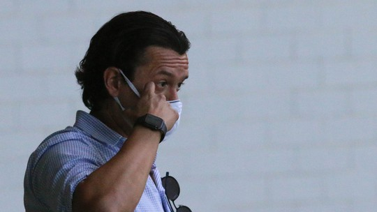

g1
o globo
valor
ge
cartola
globoplay
dropz
gshow
quem
receitas
Vacinados entrarão nos EUA sem quarentena a partir de 8 de novembro
Ministros ‘lavam as mãos’ sobre Bolsonaro não se vacinar, relata blog
Bandeiras em frente ao Congresso lembram 600 mil brasileiros mortos
Além do presidente
CPI deve pedir indiciamento de filhos de Bolsonaro
A evangélicos, Bolsonaro diz ‘chorar sozinho em casa’
Crimes na fronteira
Triângulo amoroso vira chave em linha de investigação
1ª de 7 mortes entre Brasil e Paraguai faz 1 semana
Reino Unido
Parlamentar inglês é esfaqueado e morto em igreja
Homem de 25 anos foi preso no local, diz polícia
Sabatina de Mendonça
PGR é consultada sobre investigação contra Alcolumbre
Aliados dizem que situação de Alcolumbre ‘está feia’
Negócio de R$ 5,2 bi
Pão de Açúcar vende 71 pontos do Extra para o Assaí
Lembre fusões e aquisições bilionárias recentes no país
Elo com caminhoneiros
Podcast: ministro liga empresários a atos de 7/9; ouça
Neto de Jango critica veto de Bolsonaro a tributo
Espião estatístico
Classificação do returno tem Palmeiras em último; veja as posições
Crespo almoça com diretoria e deve se despedir no CT

Greve segue na Raposa
Cruzeiro não viabiliza recurso para quitar atrasados
Campeonato francês
Desfalcado, PSG recebe o Angers, 4º colocado
Férias e JH
César Tralli se emociona na despedida do SP1
Verdades Sceretas 2
Angel cruza a passarela poderosa; reveja desfiles
Blanche terá dois relacionamentos
Gabriel viverá sadomasoquista
Nos Tempos do Imperador
Lota vai cair em golpe
Teresa toma decisão radical